日に日に暖かさが増し、野草は土や枯葉の中から時をかけ迷うことなく、その姿を伸び現している最中。
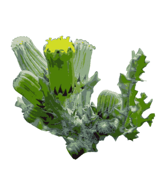
『寒風に花も実も耐えノボロギク』
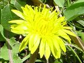
『風の精若草映えるたんぽぽ花』
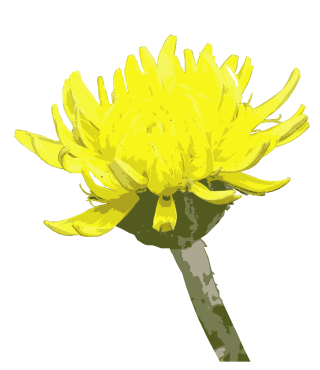
『風の精若草映えるたんぽぽ花』
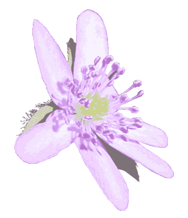
『枯葉割り伸び出でて春スハマソウ』
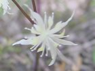
『行く手には地に伏せしオウレンの花』
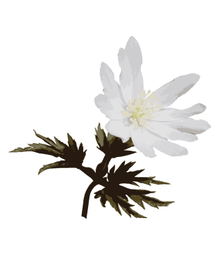
自分の好きな色のめがねをかけて、喜んでいる。どんな立派な考え方でも同じことをしいているのではないですか。五官で春にふれ、まだ何かたりないものでもありますか？
『枯野からキクザキイチゲ起き上がる』
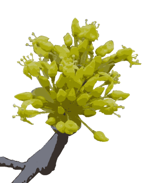
『かすみ空黄花散らせしハルコガネ』
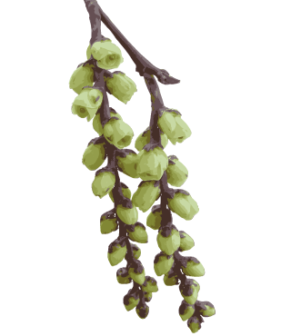
『枝先にキブシ房垂れ里は春』
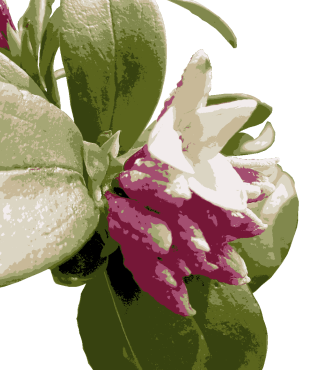
『沈丁花香りではっと見てほっと』
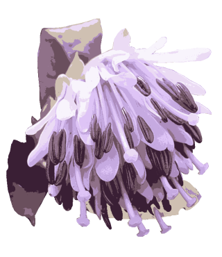
『山間で花振り上げし立役者』
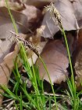
『ここかしこ歩む足元春芽生え』
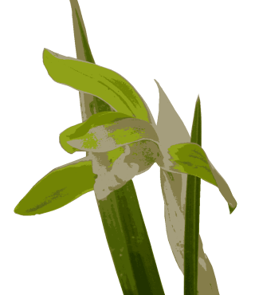
春の日差し、草木の息吹漂う山間にシュンランが一株。透き通るように鮮やかな花びらとの出会い。小さいけれど、包み困れるような感じがする。
『里の春目を凝らしては山歩き』
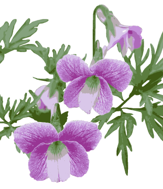
『やりたいな』といくら思ってみても仕方ないです。やりさえすれば、実行されるんです。夢があると良さそうですけれどもそれが迷いの根です。夢を捨ててみたら…つまらないですか？
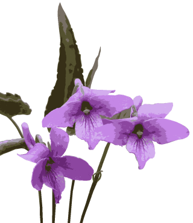
背丈の低いスミレは種類も多く名前を調べるのも一苦労ですが、その特徴を良く観察しておくことが早道です。
『そよ風にスミレ首振る峠道』
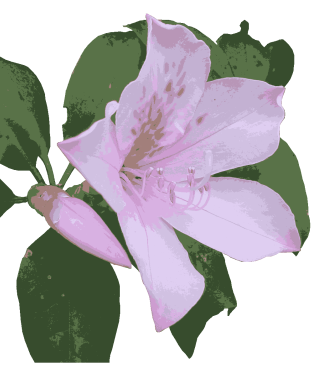
『南国で再び出会う聖紫花』
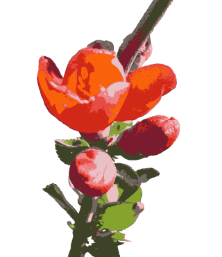
『地べた這い土手に輝く木瓜の花』
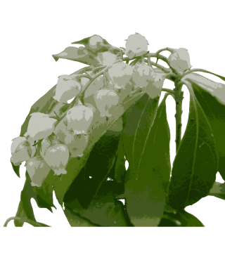
『引越しの日車窓に映り咲くアセビ』
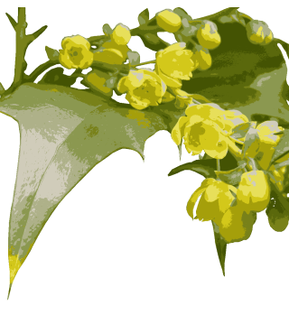
『渡り来た黄花ナンテントゲ立つ葉』
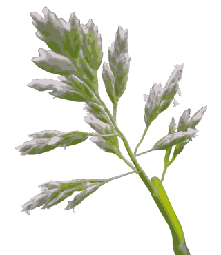
『柔らかく小さくスズメノカタビラ』
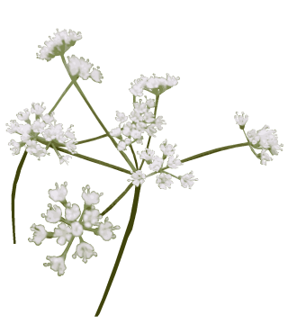
『山野に白ほとばしるセントウソウ』
トップへ戻る
▼時の流れ
ノボロギクは道ばた、荒地、畑などに生える1～2年草。茎は赤みを帯び、高さ10～40cm。葉は互生し、倒披針状長だ円形で羽状に中裂する。下部の葉は有柄だが、上部は無柄で茎を抱く。枝の先につく頭状花は黄色ですべて管状花。そう果は円柱状で冠毛は白い。ヨーロッパ原産の帰化植物。他の植物との競争に弱い分、年中花を咲かせ冠毛の付いた種を飛ばす。『寒風に花も実も耐えノボロギク』
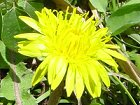
▼空飛ぶ花
セイヨウタンポポは、総苞の外片が花時にはそり返る。花期は春～秋。在来種は春
だけ。受粉しなくても細胞分裂により種子を作るのに対し、在来種は同じ株の花粉でさえ
結実しない。荒地を得意とし、身近な街中でも良く見かける。在来種は自然の色濃いとこ
ろを得意とする。こんな所では逆にセイヨウタンポポは見られない。『風の精若草映えるたんぽぽ花』
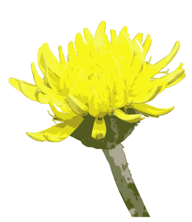
▼空飛ぶ花
カントウタンポポは日当たりのよい原野や丘陵の道ばたなどに生える多年草。葉は倒披針形で羽状に裂け、裂片は逆向きの歯牙状。花冠は黄色。総苞の外片は卵状長だ円形かまれに卵形、上部に角状突起はない。『風の精若草映えるたんぽぽ花』
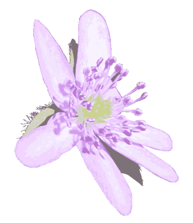
▼里は春
スハマソウは山林の下に生える多年草。根茎は細く節が多い。葉は根生し三角形で3中裂、先は鈍頭または円頭で基部は心形、表面は光沢があり、越冬する。花弁はなく、がく片は花弁状で6～10枚、白色か紅紫色。『枯葉割り伸び出でて春スハマソウ』
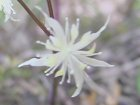
▼花道
コセリバオウレンは山の木陰に生える多年草。地下茎は太く、黄色のひげ根を持ち、薬用になることから、栽培もされるそうです。根生葉は叢生して3回3出葉。葉のつき方で名前が違う。両性花と雄花がある。『行く手には地に伏せしオウレンの花』
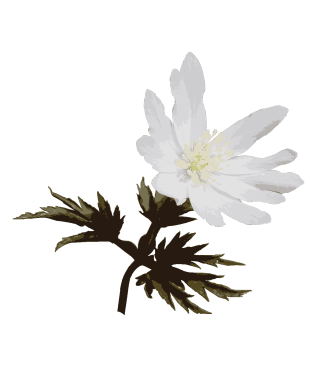
▼春にふれて
キクザキイチゲは山地の明るい林内に生える多年草。地下茎はやわらかい腐植土の中を横にはい、長さは2～10cmになる。根生葉は2回3出複葉で長い葉柄があり、小葉は卵形で3～5深裂し、不揃いの鋸歯がある。花茎は10～30cmの高さに1本出て、花を1個つける。総苞葉は3枚輪生して、根生葉と同形である。花は淡紫色から淡紅色あるいは白まで変化が多い。がく片は10～12枚。花弁はなく、雄ずい、雌ずいとも多数で、花柱は短く細い。よく日の当たる土地では、芽や葉が紅色を帯びることがある。別名：キクザキイチリンソウ。自分の好きな色のめがねをかけて、喜んでいる。どんな立派な考え方でも同じことをしいているのではないですか。五官で春にふれ、まだ何かたりないものでもありますか？
『枯野からキクザキイチゲ起き上がる』
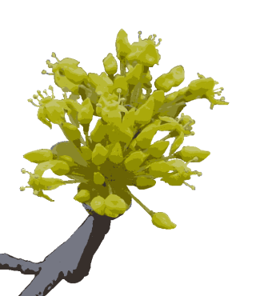
▼古人
サンシュユは寺院の庭などに植えられている5～12mの落葉小高木。葉は対生し、卵形～狭だ円形、長さ4～10cm、先端はとがり、全縁である。下面は淡緑色、葉腋には黄かっ色の毛がある。側脈は目立ち、5～7対ある。花は葉が開く前に前年枝の先に散形花序を出し、花径が4～5mmの花が20～30個群がって咲く。雄しべは4本、雌しべは1本。液果はだ円形で長さは約1.5cm、8～9月に赤く熟する。分布：中国・朝鮮。薬用として寺院に植えられる。熟果の種子を取り外して乾燥させたものを「山茱萸」といい、解熱、強壮剤として使われる。このほか、切り花として利用される。『かすみ空黄花散らせしハルコガネ』
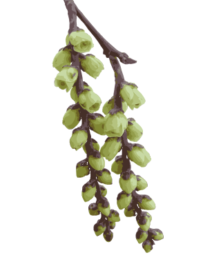
▼驚く
キブシは山地に生える落葉低木～小高木。高さ3～12m。葉は互生し、だ円状卵形～長だ円形で長さ4～12cm、幅2～5cm、膜質で表面は光沢があり、先端は長く、ふちには鋭い鋸歯がある。雌雄異株。花は黄色～淡黄色で4弁、多数下垂して咲く。雄しべは8本。雄花は雌花よりやや大きい。果実は黒の染料になるそうです。花の個性の多様さを感じます。のんびりと散歩して花を見つけるとうれしいです。『枝先にキブシ房垂れ里は春』
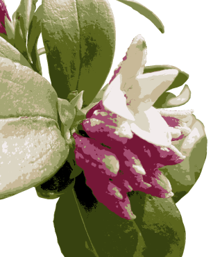
▼香り立つ
ジンチョウゲは庭に植えられる常緑低木。葉は有柄で互生し、倒披針形で長さ5～10cmあり、革質で厚くなめらかで、全縁である。3～4月、枝先に外面は紅紫色で内面は白色の花を10～20個開き、芳香がある。雌雄異株。葉の覆輪、白花など、いくつかの品種がある。挿し木でよく増える。『沈丁花香りではっと見てほっと』
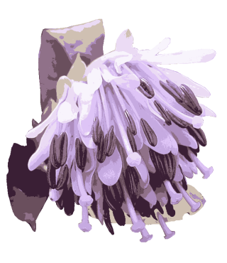
▼役者
ショウジョウバカマは山地の湿り気のある草原に生える常緑の多年草。地下茎は太くて短い。葉は多数が根生し、倒披針形～狭長だ円状披針形で先がとがり、鋸歯はなく、両面とも無毛で、表面は多少光沢がある。花茎は高さ10～30cmで花後50～60cmになる。鱗片葉が数枚つく。花茎の先端に、3～15個の花が短い総状につく。花柄は長さ10～15cmで、花後に伸びる。花被片は6枚で紅紫色、花後黄緑色を帯びる。果実はさく果。地面に張り付いた葉の真ん中から花芽が咲き、次第に地上高く持ち上げて行く、可憐さと力強さそして儚さを魅せる役者の様。『山間で花振り上げし立役者』
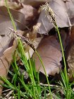
▼寒菅
冬でも常緑で艶のあることからカンスゲの名が付いた。花は目立たない、名前もなかなか覚えられない。ですが、ひとつひとつ良く見ると特徴があり親しみを覚えます。『ここかしこ歩む足元春芽生え』
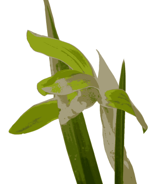
▼早春の森
シュンランは山林や低山のやや乾いた落葉樹林の下に生える常緑の多年草。白く太いひげ状の粗大な根がある。葉はへりに微細な鋸歯がありざらつく。花は1個で横を向き淡黄緑色。がく片はやや肉質。側花弁は前方へ曲がってずい柱をおおう形となる。唇弁は質厚く、白色で濃赤紫色の斑点があり、前方は反曲。春の日差し、草木の息吹漂う山間にシュンランが一株。透き通るように鮮やかな花びらとの出会い。小さいけれど、包み困れるような感じがする。
『里の春目を凝らしては山歩き』
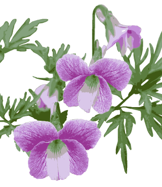
▼夢を捨ててみたら
エイザンスミレは日陰、ときに日当たりのよい林の下に生える多年草。根茎は太く短く、根もとから花梗と葉を出す。開花時の春葉は3裂し、さらに側方の裂片は小さい柄の上部で2全裂し、裂片の幅は広い。夏葉は3裂し、各裂片は幅広くまったく裂けないかまたは欠刻状に裂け、葉柄は長い。花は大きく淡紅紫色を帯び、花弁には濃い紫色のすじがある。香りが強い。夏に閉鎖化を咲かせ実をつける。種には糖質を含む脂肪をつけ、蟻は巣まで運んで、実は外へ捨てる。『やりたいな』といくら思ってみても仕方ないです。やりさえすれば、実行されるんです。夢があると良さそうですけれどもそれが迷いの根です。夢を捨ててみたら…つまらないですか？
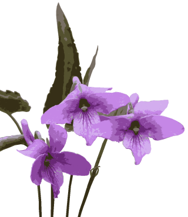
▼案内人
オカスミレは日当たりのよい原野、道ばたに生える多年草。地上茎はなく、根もとから葉や花梗を出す。全草に毛はない。葉は長卵形で先は鈍くとがり、基部は浅い心形でへりの鋸歯は低い。花梗の数は多く、頂に紅紫色の花を横向きに開く。花弁には紫色のすじがある。子房やさく果に毛がある。全草に毛が多いのはアカネスミレ。背丈の低いスミレは種類も多く名前を調べるのも一苦労ですが、その特徴を良く観察しておくことが早道です。
『そよ風にスミレ首振る峠道』
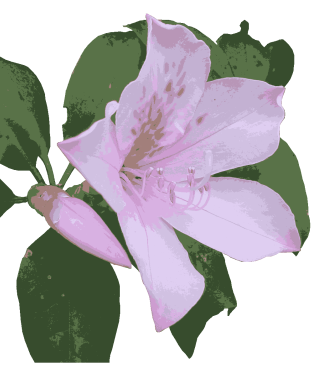
▼再び
セイシカは岩場などに生え、高さ7～8mになる常緑低木～小高木。葉は長さ6～10cmの長だ円形または倒卵状長だ円形で葉先は尖る。薄い革質でやや光沢があり、表面の主脈はくぼむ。花冠は淡紅紫色で直径6～7cm。5中裂する。雄しべは10個で花糸は有毛。『南国で再び出会う聖紫花』
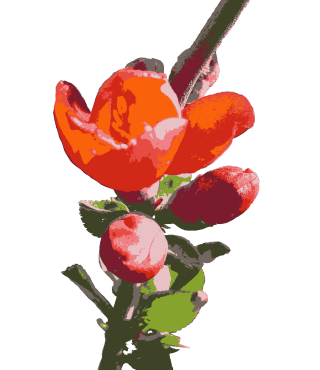
▼木瓜
庭園に植えられる落葉低木。小枝にかたいとげがある。葉は互生し、だ円形～長だ円形で長さ4～8cm、幅1.5～5cmあり、上面につやがあり、ふちには鋸歯がある。若枝の葉のたく葉は大きく早く落ちる。花は赤色または白色で前年の枝に開く。雌雄同株。花径は約3cm。果実は球形～だ円形で、7～8月に黄熟する。中国原産。多くの品種がある。『地べた這い土手に輝く木瓜の花』
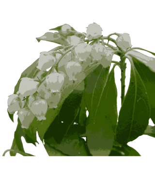
▼馬酔木
アセビは山地に生える常緑低木～小高木。葉は互生、革質で厚くつやがあり、広倒披針形で、長さ3～8cm、ふちに鈍鋸歯がある。枝先に多数のつぼ状の花がたれさがる。花冠は白色で、先は短く5裂する。庭園木として植えられる。有毒である。『引越しの日車窓に映り咲くアセビ』
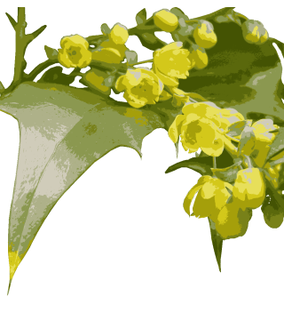
▼渡来
ヒイラギナンテンは常緑低木。枝はあまり分枝しない。幹はコルク質が厚く発達し、内皮は黄色。葉は互生し、上部に集まる。奇数羽状複葉で小葉は柄がなく、表面は濃緑色で光沢がある。裏面は淡緑色で葉脈がめだつ。ふちにはするどい鋸歯があり針状。長さ4～9cm、幅2.5～5cm。花は総状花序となり、黄色。液果は10月に熟し、黒色、粉白色となる。17世紀（江戸時代）に中国より渡来した。『渡り来た黄花ナンテントゲ立つ葉』
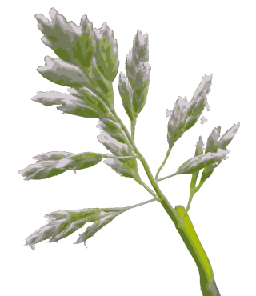
▼足元に
スズメノカタビラは人家付近、耕作地、道端、ときに高山の道端や山小屋の周辺などにも見られるふつうの1～2年草。稈は叢生し、高さ10～30cmで、直立または斜めに立ち上がり四方へ広がる。葉は両面が無毛でやわらかく、幅1～5mm、少し内側へ折れ曲がる。葉舌は白色で、へりは全縁または低い歯牙があり、半円形または鈍形で、長さ3～6mm。円錐花序は、長さ3～5cmで、花序の枝ははじめは斜上しているが、花期には開出する。小穂は扁平で長さ3～5mm、3～5小花からなる。『柔らかく小さくスズメノカタビラ』
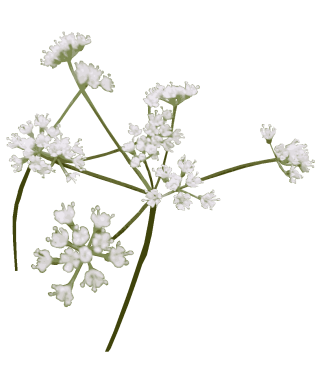
▼ほとばしる
セントウソウは山野の明るい林の下に生える小形の多年草。根もとから葉と花茎を出し、全体がやわらかである。高さ10～25cm。葉は2～3回3出羽状複葉で、裂片は広いものから狭いものまであって、変化が多い。花梗は斜上し、長さ10～25cmで頂きに大散形花序をつける。小散形花序は3～5個。柄の先に白色の小さな花が5～8個集まって咲く。日本特産の属である。
『山野に白ほとばしるセントウソウ』